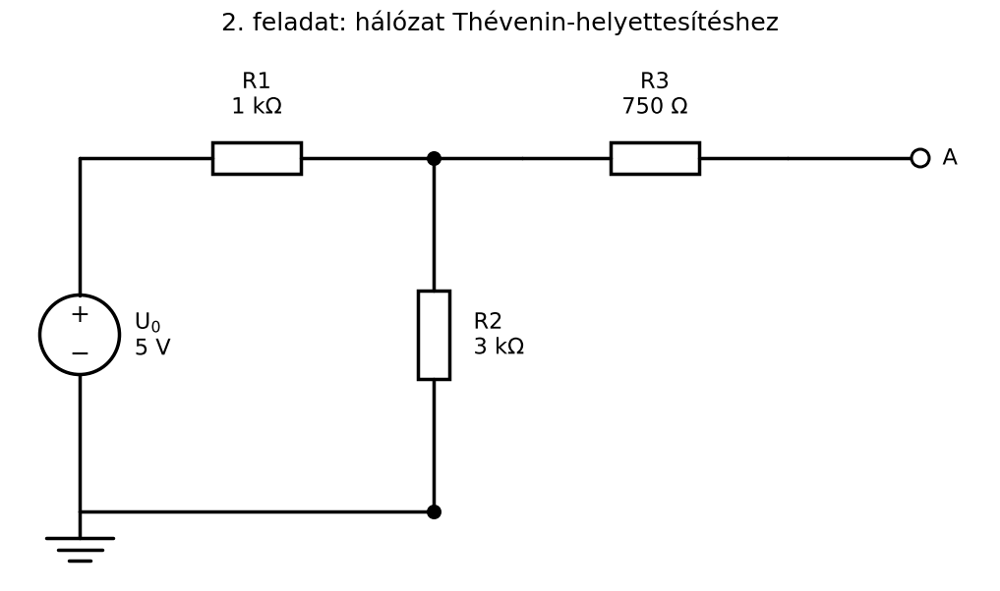
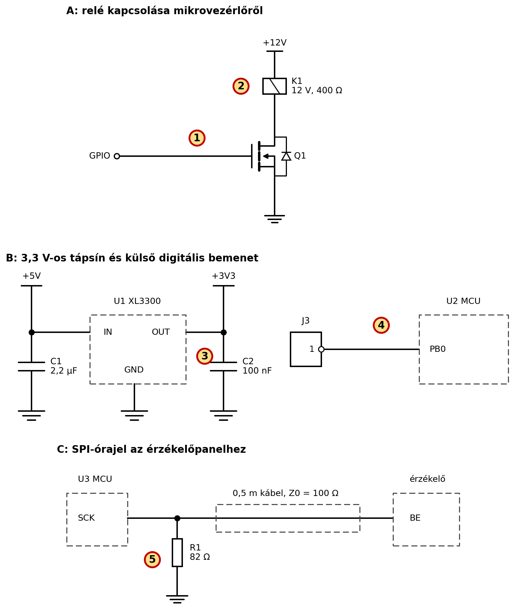
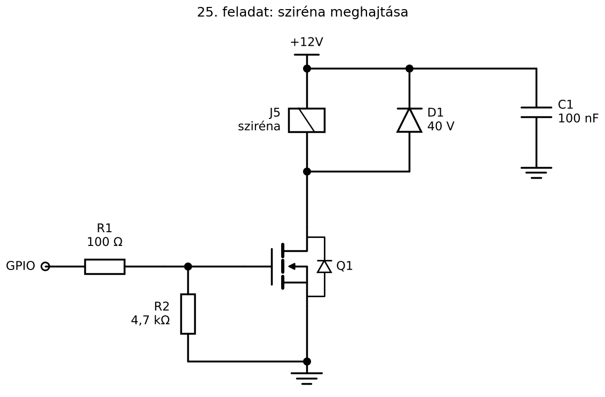

Ez a feladatsor a könyv egész anyagát átfogja, a töltéstől a tervezési átvizsgálásig. Nincs benne új tananyag. A végére:
KOMPETENCIATERKEP.md ellenőrző pontjai szerint
felméred, mit tudsz már biztosan.Dolgozz papíron, számológéppel, zárt megoldókulccsal; a könyv fejezeteit csak az értékelés után nyisd ki. Ajánlott idő 3 óra, két részletben is rendben van. Ha egy adat nincs megadva, mondd ki a feltevésedet. Minden alkatrészadat mintaadat.
| Rész | Téma | Feladat | Pont |
|---|---|---|---|
| A | hálózatszámítás és mérés | 1–4 (4×4) | 16 |
| B | passzív elemek, tranziens, szűrő | 5–8 (4×4) | 16 |
| C | félvezetők és műveleti erősítők | 9–13 (5×4) | 20 |
| D | tápellátás és vegyes jelek | 14–17 (4×4) | 16 |
| E | tervezési szabályok | 18–21 (4×3) | 12 |
| F | hibakeresés kapcsolási rajzon | 22–24 (3×4) | 12 |
| G | rövid tervezési feladat | 25 | 8 |
Részpontozás: egy feladat pontjának harmada a helyes összefüggés a feltételeivel, harmada a számolás egységgel, harmada a következtetés vagy józanész-ellenőrzés. Puszta végeredmény legfeljebb egyharmadot ér.
1. 9 V-ról 10 kΩ (felső) és 4,7 kΩ (alsó) ellenállás alkot osztót, a kimenetet 22 kΩ terheli. Mekkora a kimenet, és hány százalékkal tér el a terheletlentől?
2. Add meg az alábbi hálózat Thévenin-helyettesítését az A kivezetésre. Mekkora az 1,5 kΩ-os terhelés feszültsége és teljesítménye?

3. Egy relétekercs 25 °C-on 400 Ω. Mekkora az árama és teljesítménye 12 V-on, hány Wh energiát fogyaszt 8 óra alatt, és mekkora az árama, ha a réztekercs 60 °C-os ( = 0,0039 1/K)?
4. Egy multiméter 12,03 V-ot mutat; pontossága ±(0,5 % + 2 digit), felbontása 0,01 V. Add meg a határhibát és a standard bizonytalanságot egyenletes eloszlással. Miért kell a labortápon áramkorlátot beállítani, mielőtt a mért áramkört bekapcsolod?
5. Egy ellenállás 0603-as tokban (0,1 W) közvetlenül a bemeneti sínre kerül, amely legfeljebb 16 V. A terheléscsökkentési irányelv 50 %. Mekkora a legkisebb megengedett E24 érték?
6. 10 kΩ ±1 % és 100 nF ±10 % soros RC-kört 3,3 V-os ugrás gerjeszti. Mikor éri el a kondenzátor a 2,31 V-os logikai magas küszöböt? Mi a legrosszabb (leglassabb) eset?
7. Egy hosszú tápvezeték 1 µH, a hurok teljes ellenállása 55 mΩ, a bemeneten 10 µF van. 12 V-os feszültség rákapcsolásakor mekkora a csillapítási tényező, a rezonanciafrekvencia, a feszültségcsúcs, és mekkora ellenállás adna kritikus csillapítást?
8. A sönterősítő jelére a követelmény: 1 kHz-en legfeljebb 1 dB, 20 kHz-en legalább 40 dB csillapítás. Teljesíti-e az 1,6 kΩ + 100 nF-os elsőrendű aluláteresztő? És egy 1,61 kHz-es határfrekvenciájú, másodrendű Butterworth-szűrő?
9. Egy kék LED nyitófeszültsége 2,7–3,2 V (tipikusan 2,9 V). Méretezd az előtétet 5 V ±5 %-ról kb. 5 mA-re (E24, ±1 %), és számold ki a legkisebb és legnagyobb áramot. Mi történne 3,3 V ±5 %-ról?
10. 3,3 V-os GPIO ( legalább 2,9 V, legfeljebb 8 mA) npn tranzisztorral kapcsol 100 mA-es terhelést; = 60, túlvezérlés 3×, legfeljebb 0,8 V. Válassz bázisellenállást, és ellenőrizd a GPIO-t.
11. Low-side MOSFET 12 V-on 1,5 A-es induktív terhelést kapcsol, = 50 %, 20 kHz, = 300 ns, = 35 mΩ (25 °C-on), meleg hőfokszorzó 1,3, = 125 K/W, = 60 °C. Mekkora a veszteség és ?
12. Egy magas oldali söntöt (50 mΩ) négy 1 %-os ellenállásból álló, = 20-as különbségképző erősít. A közös módusú feszültség 4 V-ot változik. Mekkora a legrosszabb hiba amperben? Mennyi lenne egy 80 dB CMRR-ű árammérő erősítővel?
13. Neminvertáló hiszterézises komparátor: = 10 kΩ, = 100 kΩ, = 1,5 V, a kimenet 0 vagy 3,3 V. Mekkora a két billenési küszöb, és miért kell hiszterézis?
14. LDO 5 V-ról 3,3 V-ot ad 150 mA-en, SOT-23-5 tok (180 K/W), = 60 °C. Mekkora , és legfeljebb mekkora áramnál marad 125 °C alatt? ( elhanyagolható.)
15. Buck: 12 V → 5 V, 500 kHz, 10 µH, tényleges = 22,9 µF, 1 A. Mekkora , , a kapacitív hullámosság és a tekercs csúcsárama?
16. NTC-osztó: 10 kΩ soros ellenállás a 3,3 V-ról, NTC 10 kΩ 25 °C-on, = 3435 K, 12 bites ADC 3,3 V-os referenciával. Mekkora a feszültség érzékenysége 25 °C-on és a felbontás °C-ban? Miért előnyös a ratiometrikus mérés?
17. (a) A 2 A-es bemeneten fordított polaritás ellen 0,5 V-os Schottky-diódát vagy 20 mΩ-os p-MOSFET-et használsz: mekkora a veszteség? (b) Egy TVS letörése 20 V, dinamikus ellenállása 0,5 Ω; a tesztimpulzus 30 V, 2 Ω, 1 ms. Mekkora a TVS árama, fogófeszültsége, teljesítménye és az elnyelt energia, ha a bemeneti puffer kondenzátort nem veszed figyelembe?
18. Egy 12 V-os, 20 ns felfutású él 2 pF csatolással halad egy 1 kΩ impedanciájú vevővezeték mellett; a kölcsönös induktivitás 20 nH, az agresszor árama 50 ns alatt változik 1 A-t. Becsüld meg a kapacitív és az induktív áthallást, és ellenőrizd a kapacitív becslés feltételét.
19. 100 Ω-os vonalat 20 Ω kimeneti ellenállású, 3,3 V-os láb hajt, a vég nyitott. Mekkora az első érkező hullám a végen lezárás nélkül, és mekkora soros ellenállás kell?
20. Egy csatlakozónál a TVS földbekötése 3 nH. Mekkora feszültséget ad hozzá egy 30 A-es, 0,8 ns alatt felfutó ESD-impulzus? Mit rögzítesz ezért a kényszerlistán?
21. Mi a különbség a légköz és a kúszóút között? Sorolj fel mindkettőre két-két tényezőt, amelytől a szükséges érték függ, és mondd meg, honnan veszed a számértéket.
A következő három rajzon öt hiba van. Mindegyiknél add meg a tünetet, az okot és a javítást, a megfelelő alfejezetre hivatkozva. 22.: A rajz (két hiba), 23.: B rajz (két hiba; J3 külső kábel), 24.: C rajz (egy hiba; számold is ki a következményét 20 Ω kimeneti ellenállással).
25. Egy külső kábelen lévő 12 V-os sziréna (120 Ω, 50 mH, mintaadat; 100 mA) kapcsolandó 3,3 V-os GPIO-ról; reset alatt kikapcsolva; a modul bemenetén 30 V-os impulzus lehetséges. Add meg: (a) a kapcsolási rajzot értékekkel; (b) a MOSFET feszültség-, bekapcsolási és hőellenőrzését; (c) a dióda követelményeit és az elengedési időt; (d) két kényszerlista-sort és egy nyitott kérdést.
1. kΩ; V. Terheletlenül V; eltérés −12,7 %. A terhelés nem elhanyagolható, mert csak ötszöröse az alsó ellenállásnak (Feszültségosztó, áramosztó és a terhelés hatása).
2. V (R3-on terheletlenül nem folyik áram); kΩ. Illesztett terhelésen V, mW (Valós források, Thévenin és Norton).
3. mA, W, Wh (≈ 10,4 kJ). Melegen Ω, mA: a meghúzást a legmelegebb, legkisebb feszültségű sarokban kell ellenőrizni (Ellenállás és az Ohm-törvény).
4. Határhiba: V; V; eredmény 12,03 V ± 0,08 V (határ). Az áramkorlát bekötési hiba vagy zárlat esetén megakadályozza a károsodást és a túlmelegedést (Mérési hiba, bizonytalanság és jegyzőkönyv, Labortáp, áramkorlát és függvénygenerátor).
5. W, kΩ → E24: 5,6 kΩ (46 mW). 5,1 kΩ már 50,2 mW; a legrosszabb feszültség dönt (Teljesítmény, hőfoktényező, feszültségtűrés és típusok).
6. , ms. Leglassabb: ms (RC és RL töltés–kisütés, időállandó).
7. ; kHz; csúcs V; kritikus: Ω (RLC tranziens: csillapítás és túllövés).
8. Hz: 1 kHz-en 3 dB, 20 kHz-en csak 26 dB – egyik feltétel sem teljesül. Másodrendű: dB és dB – teljesül ideális elemekkel; a tűrést külön vizsgálni kell (Szűrőtervezés alapjai: rendűség, Butterworth és tűrés, Komparátor, hiszterézis és aktív szűrők).
9. Ω → 430 Ω (névlegesen 4,9 mA). Legkisebb: mA; legnagyobb: mA. 3,3 V −5 % = 3,14 V < 3,2 V: egyes példányok alig vagy egyáltalán nem világítanának (Zener-dióda, LED és fotodióda).
10. mA; Ω → 390 Ω (5,4 mA). A legnagyobb áram ( = 3,3 V, = 0,7 V): 6,7 mA < 8 mA – rendben (A BJT mint kapcsoló).
11. mW; mW; °C (Kapcsolási folyamat: gate-töltés, Miller-plató és meghajtás).
12. (54 dB); kimeneti hiba mV, az 1 V/A-es láncban 152 mA (a 2 A-es méréshatár 7,6 %-a). 80 dB-lel: mV, 8 mA. Ezért kell dedikált árammérő erősítő (Alapkapcsolások: invertáló, neminvertáló, összegző, különbség- és műszererősítő, Érzékelők illesztése és a jelút hibaköltségvetése).
13. : felfelé ( = 0) 1,65 V, lefelé ( = 3,3 V) 1,32 V. A 0,33 V-os hiszterézis nagyobb zajt is elvisel többszöri billenés nélkül.
14. W, °C. Legfeljebb W, azaz 212 mA (Hőtervezés és vezetőmelegedés).
15. ; A; mV; csúcsáram A, ez a tekercs telítési áramának mércéje (A buck konverter).
16. Ω/K; mV/K; LSB = 0,806 mV → 0,025 K. Ratiometrikusan a referencia és az osztó tápja azonos, a tápfeszültség hibája kiesik (DAC, PWM, feszültségreferenciák és ratiometrikus mérés).
17. (a) Dióda: W; p-MOSFET: mW. (b) A, V, W, 1 ms alatt 88 mJ (Tápbemeneti védelmek: biztosíték, polaritás, túlfeszültség, áramlökés). Ez puffer nélküli, óvatos becslés: az 1. záróprojekt: védett tápegység 12 V-ról 5 V-ra és 3,3 V-ra láncában a 470 µF miatt a TVS csak kb. 15,6 mJ-t nyel.
18. = 600 V/µs, V; a feltétel ns ≪ 20 ns teljesül. V (Csatolási mechanizmusok és áthallás).
19. Elinduló hullám V, a nyitott végen megduplázódik: 5,5 V, túllövés. Soros lezárás Ω → 82 Ω: az induló hullám 1,63 V, a végen 3,27 V (Reflexió, lezárás és illesztés).
20. V a TVS fogófeszültségén felül. Kényszer: „a TVS a csatlakozónál, a jel a lábán halad át, földje a lehető legrövidebb úton a csatlakozó földlábára” (ESD- és túlfeszültség-védelem az áramkörben).
21. A légköz a legrövidebb út két vezető között a levegőben (a tüskefeszültség üti át): függ például a várható túlfeszültségtől, a szigetelés fajtájától és a magasságtól. A kúszóút a szigetelő felületén mért legrövidebb út (a szennyezett felület lassú átívelése): függ az üzemi feszültségtől, a szennyezettségi foktól és az anyagcsoporttól (CTI). A számértéket a termékre érvényes szabvány hatályos kiadásából veszed (ellenőrizendő: IEC 60664-1, ill. a termékszabvány) (Szigetelési távolság és kúszóút).
22–24. A rajzok megjelölt változata:

| # | Tünet | Ok | Javítás |
|---|---|---|---|
| 1 | resetkor a relé magától meghúz vagy remeg | lebegő (vagy belső felhúzós) gate, soros ellenállás sincs | 100 Ω soros, 4,7 kΩ gate–source (Mikrovezérlő GPIO illesztése terhelésekhez) |
| 2 | az első kikapcsolásoknál tönkremegy a MOSFET | a tekercs áramának nincs útja, a drain a letörésig ugrik | dióda a tekercsen, katód a +12V-on (Biztonságos működési tartomány, lavina és induktív terhelés) |
| 3 | a 3,3 V-os sín leng, hidegen vagy terhelésugrásra begerjed | a kimeneten kevesebb az adatlapi 1 µF tényleges kapacitásnál | 2,2 µF X7R a lábnál, a felső határ (47 µF) figyelésével (Az adatlap olvasása) |
| 4 | érintés vagy kábelcsatlakoztatás után holt vagy hibás láb | a külső vezeték védelem nélkül ér a chipbe | TVS a J3-nál, utána 100 Ω soros (ESD- és túlfeszültség-védelem az áramkörben) |
| 5 | rossz órajelszint, melegedő láb, hamis élek | a 82 Ω párhuzamosan a földre van kötve a meghajtónál | soros 82 Ω a láb és a kábel közé (Reflexió, lezárás és illesztés) |
A 24. számítása: a földre kötött 82 Ω a lábból tartósan mA-t vesz ki (a 8 mA-es határ négyszerese), a szint V-ra esik, a nyitott végű vonal reflexióját pedig nem szünteti meg. Pontozás: 22–23.: hibánként 2 pont; 24.: hiba 2, számítás 2 pont.
25. (a)

A kulcs néhány száma az elkit megfelelő
függvényeivel:
from elkit import budget, dc, power
c = dc.Circuit()
c.add_vsource("U0", "in", "0", 5.0)
c.add_resistor("R1", "in", "m", 1e3)
c.add_resistor("R2", "m", "0", 3e3)
c.add_resistor("R3", "m", "a", 750.0)
c.add_resistor("RL", "a", "0", 1500.0)
print(f"2.: U_terhelés = {c.solve().v('a'):.3f} V")
print(f"4.: határhiba = {budget.meter_limit(12.03, 0.005, digits=2, resolution=0.01):.3f} V")
print(f"11.: P_sw = {power.switching_loss(12, 1.5, 150e-9, 150e-9, 20e3) * 1000:.0f} mW")
t = power.turn_off("dióda", u_supply=12.0, l=0.05, r=120.0, u_f=0.45)
print(f"25.: t_0 = {t.t_zero * 1000:.2f} ms")2.: U_terhelés = 1.875 V
4.: határhiba = 0.080 V
11.: P_sw = 54 mW
25.: t_0 = 1.38 msÍrd be a pontjaidat; a KOMPETENCIATERKEP.md ellenőrző
pontjai a nyomtatott fejezet.alfejezet számozást használják.
| Kompetencia | Feladat | Max. | Ha 60 % alatt, ismételd |
|---|---|---|---|
| 1. hálózatszámítás | 1–3 | 12 | 3.3, 4.1, 4.3, 4.4 |
| 2. biztonság és mérés | 4 | 4 | 5.2, 6.1, 6.3, 6.4 |
| 3. valós passzív alkatrészek | 5 | 4 | 7.1, 7.2, 8.2, 8.3, 9.2 |
| 4. idő- és frekvenciatartomány | 6–8 | 12 | 10.1, 10.3, 11.3, 12.2, 12.4 |
| 5. félvezetős kapcsolások | 9–13 | 20 | 13.2, 14.2, 15.2–15.4, 16.2, 16.3 |
| 6. tápellátás és vegyes jel | 14–17 | 16 | 18.1, 18.2, 19.1, 19.3, 20.1, 20.4 |
| 7. tervezési szabályok | 18–24 | 24 | 21.2, 21.3, 22.1, 23.2–23.4, 24.2, 24.3 |
| 8. tervezési folyamat | 25 | 8 | 25.1, 25.2, 25.4, 26.1–26.3 |
Összesen: 85 pont fölött biztos tudás; 70–84 pont megfelelő, a gyenge sorokat ismételd; 70 alatt oldd meg újra a fejezetek C szintű feladatait, mielőtt saját áramkört tervezel. Az 5. fejezet biztonsági kérdéseinél a 100 % az elvárás, függetlenül ettől a pontszámtól. A térkép mérési kritériuma ennél több: a három záróprojekt átadási csomagja az ellenőrzőlistán súlyos hiba nélkül.
A vegyes feladatsor huszonöt feladattal méri a könyv nyolc kompetenciáját: hálózatszámítás, mérés, alkatrészek, tranziens és szűrés, félvezetős kapcsolások, tápellátás, tervezési szabályok és tervezési folyamat. A hibakeresés visszatérő hibákat gyűjt össze: meghatározatlan gate, hiányzó szabadonfutó dióda, rossz LDO-kondenzátor, hiányzó ESD-védelem, rossz lezárás. Az önértékelő táblázat megmondja, mely alfejezeteket érdemes ismételni. A tanult munkamód – követelmény, számítás garantált értékekkel, ellenőrzés, kényszerlista, átvizsgálás – a NYÁK-tervezés és a firmware-fejlesztés bemenete: ami a rajzon nincs rögzítve, a NYÁK-on elveszik.